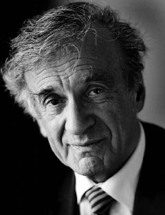

ELIE WIESEL
Jochen Winter'in uyarladığı versiyondan tercüme edilmiştir.
Yazar Elie Wiesel 1928 yılında Transilvanya'nın kuzeyinde, Sighet'te doğdu. Yahudi tacirlerin oğlu olarak Hasidi dindarlığıyla yetiştirildi. 1944 yılında ailesiyle birlikte önce Auschwitz'e, ardından Buchenwald'a sürüldü ve oradan 11 Nisan 1945'te serbest bırakıldı. Ailesi içinde Holokost'tan sağ çıkan tek kişidir. İleriki yıllarda Wiesel Paris'te Sorbonne'da öğrenim gördü. 1966 yılına dek Tel Aviv'deki Yediot Ahronot günlük gazetesinin Paris ve New York muhabiriydi. 1972'den itibaren New York'taki City College'de edebiyat, felsefe ve İbrani bilimleri öğretti. Çok sayıda başka nişanın yanı sıra, Wiesel 1986 yılında Nobel Barış Ödülü'nü kazandı. Günümüzde Boston Üniversitesi'nde beşeri bilimler profesörüdür. Eserleri arasında şunları sayabiliriz: La nuit (Minuit, 1958), L'aube (Seuil, 1960), Se taire est impossible (Arte/Mille et Une Niuts, 1995), Les juges (Seuil, 1999), Le temps des déracinés (Seuil, 2003), Un désir fou de danser (Seuil, 2006).

WIESEL
Elie Wiesel, siz Holokost'u insanlık tarihinde eşi benzeri olmayan tekil bir trajedi olarak kabul ediyorsunuz. Ama bu durumda soykırımın tarihte tekrarlanan bir olgu olmasını nasıl açıklayabiliriz? Kamboçya'yı, Ruanda'yı, milyonlarca ölüleriyle Ermenileri, Sovyetler Birliği'ni ve Gulaglarını, Mao döneminde Kültür Devrimi Çin'ini düşünelim...
Yine de Holokost ile soykırım arasında bir fark vardır. Katliamların ve vahşetin devam etmesi dünyanın ders çıkarmamasından. Bu olguda belki biz de küçük bir sorumluluk payı taşıyoruz. Uygun sözlerle bunu ifade etmeyi belki de başaramadık. Auschwitz insanı değiştirmediyse ne değiştirebilir? Auschwitz insana nefretten ve kötülükten, ırkçılıktan ve antisemitizmden nefret etmeyi öğretmediyse ne öğretebilir? Bazı insanların bu dersi anlamayı reddetmelerini anlamıyorum. Almanya'da iki yıl önce vuku bulan yakışıksız polemik[4] bende büyük acılara yol açtı. Kimse hakkında kötü konuşmak istemem ama, Martin Walser kadar prestijli bir yazar Holokost'la yüzleşmelere dayanamadığını ileri sürdüğünde, gözlerini buna kapıyorsa, ondan daha az zeki olanlar, daha az donanımlı, daha az eğitimli olanlar ne yapsın? Walser'in sözlerinin benim için bu kadar acılı olması, benim not defterlerim olan La nuit'nin Almanca baskısına önsöz yazmış olmasındandır. Bu durum metni okumuş olduğunu ama hiçbir şey anlamadığını gösteriyor. Bu nedenle gelecek baskılarda onun önsözünü çıkarmalarını Alman yayıncılarımdan istedim. Benim adım bir kitabın üzerinde Walser'in adıyla yan yana yer almamalıdır.
Toplama kamplarında yaşanan görülmemiş dehşeti şu ya da bu biçimde bastırma ve nihayet bütün bunlara bir son nokta koyma teşebbüsleri, Yahudilerin yok edilmesine yönelik incelikli programla ilgili yanlış anlamalardan ve değerlendirme hatalarından daha yeni değildir. Örneğin Hannah Arendt Eichmann Kudüs'te adlı kitabında bu konuda "kötülüğün sıradanlığı" ifadesini kullandı ve ardından İsrail'de istenmeyen kişi ilan edildi.
Hannah Arendt'i Eichmann davası döneminden beri tanıyordum, birlikte izlemiştik mahkemeyi. Önemli bir kadındı, toplumsal ve felsefi fikirleri önemliydi, totalitarizm üzerine çalışmaları tarihsel bir rol oynadı. Ama Eichmann üzerine sözleri bana yersiz gelmişti. Altı milyon insanın ölümü karşısında sıradanlıktan söz edilemez. Bir plan, bir sistem, hatta bir cinayet teorisi vardı! 1933'ten sonra yasalaşan bütün antisemitik yasalar, "nihai çözüm" yönündedir, ardından da Wannsee Konferansı'nda en ufak muğlaklığa düşmeden planlanmıştır her şey: On bir milyon Yahudi ilaveten ortadan kaldırılmalıdır. Bütün bir halkın yok edilmesini, yeryüzünden ve hatta tarihten silinmesini öngören bu kapsamdaki kararlar sıradan bir olgu değil, eskatolojik birer olgudur. Hannah Arendt özellikle bu noktada yanılmıştır. Ama şunu da söylemek gerekir ki, ona karşı çok sert davranıldı: O, yalnızca bir yanı vurgulamıştı, özel bir bam teline dokunmuştu.
Size göre, görüntüler Auschwitz deneyimini aktaramıyor. Bu konuda film çekilmesini en derininizden reddediyorsunuz, çünkü kurbanları suistimal etmeyi ve hayatta kalanları ikinci kez cehenneme yollamayı hiçbir koşulda istemiyorsunuz.
Auschwitz deneyimi temsil edilemez. Burada bir hududa çarpıldığını görmemek mümkün değildir; üzücü bir hudut elbette ama sürüp giden bir hudut. Bir kötülüğün bulunduğunu bilmemiz ve onaylamamız gerekiyor, adı olmayan ama yine de gerçek olmuş bir kötülük. Yoksa onu sıradanlaştırmaya başlarız, bu ise unutmaktan daha kötü olur. Sonradan oluşturulmuş görüntüler içinde, en iyi durumda, ancak sözcüklerle ifade edilebilir olan şeyi görmek istemiyorum; bu bir kurgu değil, ister sinemada olsun isten edebiyatta, özellikle belgelere dayalı bir durum. Elbette ki, bütünün belleğine sahip olmak için her şeyi hatırlamak gerekir: Dilin, kaygının, ölümün ve hatta sessizliğin belleği; belleğin sessizliğini bu nedenle reddediyorum. Ama bu görüntülerden kaynaklanmıyor, görüntülerle beslememize de gerek yok.
En mahrem deneyimlerin ancak sessizlikle aktarılabileceğini hep vurgulamış olan Yahudi mistiklerine ve Hasidi bilgelerine gönderme yapıyorsunuz. Bütün bunlarla Paul Celan'ın sessizlikten kıl payı çekilip çıkarılmış Ölüm Fügü'nün dizeleri arasında bir bağ kuramaz mıyız?
Paul Celan muhteşem bir şairdi, bir tür peygamber, Ölüm Fügü de buna kanıttır. Onun eseri üzerine birçok seminer düzenledim; bir keresinde Stanford üniversitesinden bir profesör çağırttım, John Felstiner, bir Celan biyografisi yayımlamıştı. Celan'ın kendi sesinden okuduğu bir Ölüm Fügü kaydıyla birlikte gelmişti. Onun sesinden, "Ölüm Alman Ustalığıdır"ı işittiğimizde bütünüyle altüst olduk, susmuştuk, donup kalmış gibi. Bu şiirde derin bir sessizlik vardır. Ben dili inkâr eden sessizliği onaylamıyorum, dili de içine katan sessizlik benim benimsediğim. Bir eserin anlamı daima barındırdığı sessizlikle ölçülür. Ben bu nedenle Auschwitz'in hikâyesini kimsenin anlatamayacağına derinden inanıyorum. Velhasıl, ben, bu konuda bir roman yazabilecek durumda değilim. Ölüme giden bir çocuğun ya da tek kelime etmeden gaz odasına giren yaşlı bir adamın korkusunu veya çocuklarının öldürülmek üzere kollarından alındığı bir kadının kaygısını asla yeniden ifade edemem. Böyle bir acı karşısında, böyle bir esrar karşısında, alçakgönüllülük göstermek kutsal bir görevdir.
Sessizliğin dilinden söz etmişken, Nelly Sachs'ı da katmak gerekir. Kutsal Kitap ve Zohar –Kabala'nın "Aydınlık Kitabı"– geleneklerinden kaynağını aldı ve "bütün dünyanın mistiği burada" dedi. Bir yandan Yakup, Daniel, Eyüp, Davud ve Saul gibi kişilere seslenirken, diğer yandan mistik anlayışa bir ifade vererek, dehşetten Tanrı'ya götüren bir yol bulmaya çalıştı, hem de bu dehşetten kıl payı kurtulmuş ama son ana dek işkence ve eziyetlere maruz kalmışken... Onun "ölüm benim ustamdı" ya da "metaforlarım benim yaralarımdır" ifadeleri size çok yakın olmalıdır.
Nelly Sachs'ı okudum, şahsen de karşılaştım. Elbette öncelikle Tanrı deneyimiyle ilgili olarak İbrani kaynaklarına başvuruyor. Ama başka bir şey de var. Nelly Sachs anadilinden uzak duruyordu, bana bunu defalarca söyledi. İsveç'ten geldiğinde, savaş başladıktan sonra, Almanca sözcüklerin çarpık çurpuk, hiçe sayılmış, saptırılmış olduğunu ve bunları kullanamayacağını fark etti. Eski metinlere dönme nedeni muhtemelen buydu. Bence, ben şiir yazmıyor olsam da, dil karşısındaki bu güçsüzlük tamamen alışıldık bir durumdur. Kelimeler kimi zaman bana son derece yoksul, zayıf ve anlamsız gelir. O zaman örneğin Eyüp'ün kitabını açarım, hatta Yeremya kitabını; başlangıçtaki gücü ancak o zaman yeniden keşfederim. Geçmişin sözcükleri benim bugünkü sözdağarcığımda yaşayıp titreşmektedir.
Nelly Sachs İbrahim üzerine de düşündü, kökensel insan, sahte Tanrıları ilk reddeden ve asıl Tanrı'ya tapan İbrahim. Nelly İbrahim'i tarihsel bir kişilikten ziyade temel bir insani tutumun cisimleşmiş hali olarak görüyordu: Kutsallık arzusu, bu geçici dünyanın şeylerini aşarak görünmezlikle ve sonsuzlukla temasa geçme kapasitesi. Sonuç olarak İbrahim başlangıçtaki yazgımıza güveni temsil ediyor ve ayrıca İsrail'in, Kutsal Kitap'taki mesaja uygun olarak, bütün insanlığın yazgısıyla oynama rolünü hazırlıyor. Onun yorumuna katılıyor musunuz?
Yahudi geleneğinde, en büyük Yahudi'nin kim olduğuna dair tartışmaktan hoşlanılır. Meymun'a göre İbrahim'dir, başka bilginlere göre Musa'dır. İbrahim inancı temsil eder, Musa yasayı. Elbette ki, her ikisi de mutlak bir hakikate, bizi hem tozdan hem candan oluşan yaratıklar yapan şeye Yahudilerin duyduğu canlı arzuyu onaylamaktadır. Benim İbrahim'e olan ilgim kimi zaman bir tür takıntı halini alır. İlk mümin o olduğu için değil yalnızca, ama özellikle İshak'ın kurtulmasının olağandışı ve hatta mucizevi hikâyesi nedeniyle. Çok sevdiği oğlunu kurban etmeye hazır bu baba nasıl bir babadır, keza bunu talep etmiş Tanrı nasıl bir Tanrı'dır! İbrahim'in uysallığı beni her zaman rahatsız etti, üstelik bir de onu lütfun, merhametin ve duygudaşlığın en yetkin hali olarak görüyoruz! Bu nedenle ortaya attığım hipotez, bu bölümden çıkardığım felsefi-ahlaki yorumu yansıtıyor: Daha baştan itibaren İbrahim Tanrı'ya itaat etmemeyi seçmişti. Ona göre –Tanrı'ya göre de olduğu gibi– bütün bunlar sınanmıştı, sanki ikisi de şunu söylüyordu: Görelim bakalım kim kazanacak! Gerçekten de Midraş'a göre İbrahim şunu söyler: "Sen bana emrettin, ben de uyguluyorum!" Tanrı cevap verir: "Ama imkânsız bu!" Bunun üzerine İbrahim koşullarını belirtir: "İshak'ı esirgememi istiyorsan, şunları şunları yap." Olağanüstüdür bu. İbrahim yalnızca Tanrı'yı keşfetmekle kalmaz, ona ilk karşı çıkandır da. İbrahim ile büyük ölçüde ateist olan günümüzün fiili görünümü arasında bir bağ kurarsam, İbrahim bizim sahte idollerimizi ve insanlıkdışı Tanrılarımızı, örneğin, bilgisayarlar ve uzaya gönderilen bu uçan nesneleri yok etme ya da en azından bunların çevresindeki haleyi yok etme yeteneğine sahip –ve büyük bir cesaretle buna çabalayan– bir insan olarak görünür.
Yahudiler, Hristiyanlar ve Müslümanlar arasında İbrahim'in anlayışında ve global bir ökümenizmin kavşağı olacak şekilde bir diyalog sizce mümkün müdür?
Evet, bence bu diyalog yalnızca zorunlu olmakla kalmaz, dahası mümkündür de. Bu bizi yeni bir durumla karşı karşıya bırakır. Kuşkusuz ki Yahudiler ile Müslümanlar arasında bu diyalog henüz asgari düzeydedir, savaşların ardında yok olduğu da olur. Çok yazıktır, çünkü bir simbiyoz evresi, altın çağ olmuştur; bizim bellibaşlı düşünürlerimiz Arapça yazıyorlardı, özellikle de Meymun, on ikinci yüzyılda Selahaddin'in sarayında yaşamış olan bu filozof ve Tamul uzmanı... Ama benim kuşağım Hristiyanlıkla ilişkilere daha fazla önem veriyor ve burada diyalog tamamen mümkün gözüküyor. Hatta şunu bile diyebilirim ki, bu iki bin yıllık tarihte bugün olduğu kadar verimli ve aydınlık bir diyalog hiç olmamıştı. Geçmişi hatırlayalım: Bir Ortaçağ hükümranı Yahudileri aşağılamak istediğinde, yerel ya da milli şeflerini çağırır ve Hristiyan rakiple tartışmaya girmeye zorlardı onları. Yahudi cemaatler için bunlar her seferinde kaygı verici günlerdi, temsilcilerini tinsel olarak güçlendirmek için oruç tutarlardı. Günümüzde iki taraf da gerçek bir zevk ve samimi bir saygıyla karşı karşıya gelmektedir, sık sık birbirleriyle konuşurlar. Benim bakış açımdan, bu gelişmeyi esasen XXIII. Jean'a borçluyuz. Kilise tarihinin belki de en büyük papası oldu. Hristiyan litürjiyi anti-semitik ifadelerden o kurtardı. Buna karşılık ben ilk başta şimdiki papadan uzak durdum. Krakovlu bu adam yakın dönemde Auschwitz'de kurbanlar için bir ayin düzenlediğinde, yani Hristiyan dininin en kutsal ve temel törenini gerçekleştirdiğinde bir hahamdan dua okumasını talep etmediği gibi "Yahudi" kelimesi dudaklarının ucuna dahi gelmedi. İnanılmaz ama doğru: Yahudi halkının başına en berbat felaketin geldiği yerde, Yahudi adını ağzına almadan vaaz verdi. Bütün katledilenlerin dini inancını öldükten sonra değiştirme niyetinde olmasın? Neyse ki o zamandan beri fikir değiştirdi: İsrail'i tanıdı ve bunun gerektirdiği diplomatik ilişkilere girdi. Dinsel cemaatleri, esasen Hristiyanlıkla Yahudiliği uzlaştırmaya çalışmış papa olarak belleklerde kalacaktır.
Yahudiliğin çok kalabalık olmayan bir grubun dini olduğu, ama bütün insanlığı derinden etkilediği olgusu üzerinde ısrar ediyorsunuz. Yahudi halkının Tanrı'nın seçilmiş halkı olduğunu bugün de hâlâ söyleyebilir miyiz?
Her insanın, her halkın, her milletin seçilmiş olması anlamında, evet. Ben küçükken, bizlerin, Yahudilerin, tek seçilmişler olduğumuzu kabul ediyordum. O zamandan beri gelişme gösterdim, bizlerin ve diğer müminlerin kaynaklarını inceledim ve fikir değiştirdim. Hiçbir halkın, hiçbir dinin kendini üstün kabul etme hakkı olmadığı kanısındayım. Tamam, ben Yahudi doğdum ama her gün kendi dinime yeniden karar veriyorum, kendimi yeniden seçiyorum. Katolik, Müslüman, Budist, bilinemezci ya da ateist de kendi inançları ve kendisi hakkında aynı şeyi ileri sürebilir. Bu bir saygı meselesidir. Ben başkasının olduğu şeye, arzusuna ve yaptığı şeye saygı gösteriyorum; tabii ki onun da bana saygı göstermesi koşuluyla.
Anlayışını gayet derin olarak incelemiş olduğunuz Martin Buber, Ben ve Sen adlı metninde ötekine temelde duyulan saygı üzerinde inşa edilen bu etkileşimi işledi.
Benim Buber'den okuduğum ilk kitap bu ve onun Hasidi anlatılarına bunu tercih ederim. Olağanüstü bir eser, felsefi anlayışıyla olduğu kadar ona biçim veren diliyle de ikna edici. Bir gün, 1947 ya da 1948'di, Sorbonne'da Buber'i dinledim, gerçekten büyük biri. Büyük oditoryum tıka basa doluydu. O orda duruyordu, o, Kutsal Topraklardan gelme varoluşçu Yahudi din filozofu. İngilizce ya da Almanca konuşuyor olsaydı dinleyicilerin yarısı tarafından anlaşılırdı, Yidiş dilinde konuşsaydı yine de beşte biri onu anlardı. Ama yaklaşık bir Fransızcayla konuşmayı tercih etti ve neredeyse kimse onu anlamadı. Her şeye rağmen, olağanüstü bir deneye katıldığı duygusu içindeydi herkes.
Hümanite ve başkalık konularında bir başka Yahudi filozofa da çok değer veriyorsunuz: Emmanuel Levinas. Eserleri sizin entelektüel gelişiminiz üzerinde doğrudan bir etkide bulundu mu?
Hayır. Aynı dönemde aynı öğretmenden ders almıştık elbette, Mordechai Chouchani, ama birbirimizi tanımıyorduk. Onun idaresinde, her öğrenci kendisiyle yalnız kalmalıydı ve yalnızca Chouchani ile diyalog sürdürmeliydi. Ancak çok sonraları, Chouchani'den birkaç metin yayımladığımda Levinas bana döndü ve bakış açılarımızı karşılaştırdık. Onun çalışmalarına hayranım, özellikle Talmud yorumlarına. Ama başkalık fikri, mistik ve Hasidilik dolayısıyla benim aşina olduğum bir fikirdi. Bir Hasidi asla tek başına yaşamaz, cemaat içinde yaşar, ötekinin kaçınılmaz varlığında yaşar, ve öteki de onu sevgiye ve hoşgörüye eğitir. Belli ölçülerde Levinas bu Sen'e dönüşü etkileyici felsefesinin mihenk taşı yaptı; bence o, Henri Bergson'la birlikte, yirminci yüzyılın en kayda değer düşünürleri arasında.
Romanlarınızda, hikâyelerinizde ve denemelerinizde, Kabala doktrinin yanı sıra Talmud'un daha ağırbaşlı yorumlarının da sizi cezbettiği sürekli görülüyor. Size göre, açıkça, dinsel ve metafizik alanın gizemlerinin incelenmesi gençliğinizden beri, aklın ve aydınlanmanın nitelediği bir söylem sürdürme iradesiyle at başı gitti. Bu dönemin anıları size hâlâ güç ve umut veriyor mu?
Edebiyat, Mauriac'ın dediği gibi, çocukluk ile ölüm arasındaki köprüyü oluşturur. Bu noktada haklıdır, buna hiç kuşku yoktur. Çocukluk bir içsel zenginlik ve eğitim kaynağıdır, ölüm bir kaygı ve korku kaynağıdır. Özünde bugün bildiğim her şeyi çocukken öğrendim, özelikle büyük babamın yanında. Hasidilik bana babam tarafından getirildi, Talmud'un zekâya dayalı yöntemine ilgi annem tarafından, mistisizmin ezgileri ve yüce güzelliği Kabalistik öğretmenlerim tarafından. Ama öğrenmeye hiç ara vermedim. Her gün Talmud'u ve ona eşlik eden yorumları inceliyorum. Buna karşılık, mistisizmden söz etmiyoruz.
Sizin kişisel biyografinizde anının rolü nedir?
Bütün diğer insanlar için taşıdığı rolle aynı. Anı, yaşamın ve yaşamın anlamının temel bir öğesidir. Anı olmazsa geçmiş uçuruma sürüklenir, bu da şimdiki zamanla olan bütün bağlarını yitirttirir. Anı olmadan tarih olmaz, kültür olmaz, uygarlık olmaz, ne ahlak olur ne görev bilinci. Ölülere karşı sorumluluklarımı unuttuğumda, canlılara karşı sorumluluklarımı da unuturum. Anı sayesinde beni aşan şeyle özdeşleşirim. Bu bağlamda, Alzheimer hastalığı üzerine bir roman yazmış olduğumu belirtmeliyim, kitaplarımın kuşkusuz en kasvetlisi. Kişiliği kemiren bu kanserden daha kötüsü yoktur. Hasta bir kitaba benzer, sayfalar tek tek yırtılır ve sonunda kapaktan başka bir şey kalmaz. Dünyayı bir boşluk olarak bile algılamaz, mutlak yokluk içinde yaşar, boşluğun yokluğu içinde, yokluğun yokluğu içinde. Karşısındakini tanımaz, kendini bile tanımaz. Vaktiyle bir mikrokozmosun merkezini oluşturan Ben söner, yok olur. Bu korkunç ıstırap, anının ne büyük bir anlam taşıdığını gösteriyor.
Hasidilikte anı ruhun kurtuluşunun temel koşuludur.
Evet, Hasidi hareketinin kurucusu Baal-Shem-Tob, unutmanın kefareti yavaşlattığını vurguladı, anı ise hızlandırır. İnsan anımsadığında zamanı aşar ve böylece Kutsal Kitap'ın buyruğuna saygı gösterir.
Besleyecek tanık kalmadığında Holokost'un anısının da solma, hatta yok olma riski yok mudur?
Hayatta kalanların içini bu kaygının kemirdiği kesin. Bir süre sonra, içlerinden biri sonuncu olacak ve umarım bu ben olmam, çünkü taşıması çok ağır bir yük olur bu. Bunu derken, tarihteki hiçbir trajedi bunun kadar eksiksiz belgelenmemiştir elbette. Toplanan fotoğraf, şiir, dua ve rakam yığını, ilgisiz ve uyuşmuş bir insanlığı uyandıracak ve ona "Hatırla!" diyecek kadar çoktur. Ayrıca hayatta kalanların çocukları çalışmalarını sürdürmek zorundadırlar. Genç Alman kuşağı bile, ana babalarının ve büyükanne ve büyükbabalarının hatasını üstlenmek zorunda kaldıkları için bahtsız olan bu kuşak bile, anıyı onurlandırmaya devam etme niyetini çoğu zaman göstermiştir. Bir tanık dinlediğinde sen de tanık olursun. Bu perspektif içinde hiç de karamsar değilim.
Gösterdiğiniz güven beni başlangıç noktasına dönmeye teşvik ediyor. Auschwitz'deki ve Buchenwald'daki dehşet dikkate alındığında Tanrı'ya inancı nasıl koruyabildiniz? Theodor Adorno Auschwitz'den sonra artık asla şiirin mümkün olmadığını söylüyordu. Ya Tanrı inancı?
Acılı bir soru bu. Toplama kampında, babam için, onunla birlikte ve onun sayesinde dua etmeye devam ettim. Daha sonra, kurtuluştan sonra, dinsel araştırmalarıma ve inanca daha büyük bir coşkuyla yeniden gömüldüm. İçimdeki bir ses bana yaşamımı tam da kesintiye uğradığı noktada sürdürmemi söylemişti, sanki olup bitenler bir kesintiymiş gibi. Ama sonra bir inanç krizinden geçtim ve bir daha asla tam anlamıyla kendime gelemedim: İnancım zarar görmüştü, geçmişte olduğu kadar sarsılmaz değil artık. Ama alternatifim nedir? Yok. İnananın trajedisi inançsızınkinden daha berbat olsa da, kabul eder ve üstlenir. Özel olarak da Yahudi için şu söylenebilir: Tanrı'dan yana ya da Tanrı'ya karşı olabilir ama asla Tanrı'sız olamaz. Bu nedenle ben sürekli Tanrı'ya karşı mücadeleye girişiyorum.
Birkaç yıl önce, Davos Dünya Forumu'nda, "yine de" kelimesini kullandığınızı işittim. Yani, insan doğasının şeytani yüzüne rağmen ve savaşlarla ve jenositlerle dolu bir evrensel tarihe rağmen, insan varlığına güvenmeliyiz.
Ben, insan varlığından umudunu kesmek için bütün gerekçelere sahip, travma geçirmiş bir kuşağa mensubum. Bunun nelere muktedir olduğunu, zekâ üzerinde, kültür, uygarlık üzerinde ne tür yıkıcı etkilerde bulunduğunu, topluluğun elinden alınamaz haklarını nasıl inkâr edip mahkûm ettiğini öğrendik. Kötülüğün zafer kazandığını gördük. Bundan böyle, insanlık üzerine, kurtuluş vaat eden umut üzerine güzel sözleri haklı olarak reddedebiliriz. Ama aynı zamanda ben bu meşru gerekçeleri ileri sürmemesi gereken bir kuşağa mensubum ve şunu söylüyorum: Yine de, ötekine, tarihe, Tanrı'ya inanıyorum. Yine de, insanın iyilik yönünde kendini aşma meziyetine sahip olduğuna inanıyorum. Yine de, yaşamın durmayacağına, yeni kuşakların geleceği için bir şeyler yapmak gerektiğine inanıyorum. Kötülüğü yenmek gerek ve bir çocuğun kurtulduğu, bir hastanın gülümsediği, iki ruhun karşılaştığı her an kötülük yenilir.